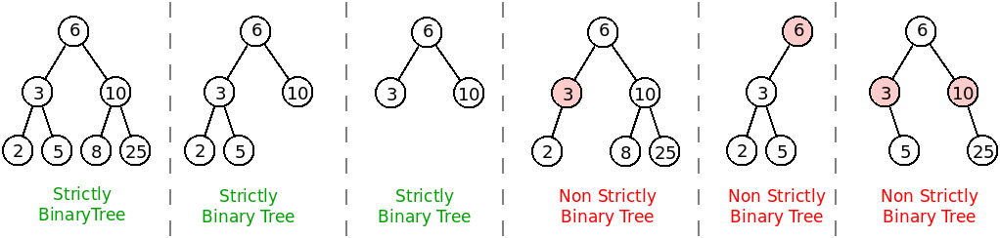

[AED040] Strictly Binary Trees
[AED040] Strictly Binary Trees[to understand the context of this problem, you should read the class #07 exercise sheet]
[AED040] Strictly Binary TreesIn this problem you should only submit a binaryTree.h file with a self-containing definition of a class BTree<T>
Use as a basis the class BTree<T> (see code | download code) which implements a generic binary tree that was explained in classes, with methods to read a tree from standard input, to write several node traversals, to count the number of nodes, to compute the height and to see if it contains a certain value.
Add a new method bool strict() const to the class. The method does not change the tree, so it should be const (as seen in the lectures). The function should return true if the tree is strictly binary, or false otherwise.
A tree is considered to be strictly binary if there is no node with only one child, i.e. if all its nodes have exactly two children or are leaves (zero children). The following figure illustrates six binary trees, the first three of which are strictly binary and the last three of which are not (the nodes that do not fulfil the requested condition are indicated in red).

You should submit the file binaryTree.h with the method strict added to binaryTree<T> as requested (and without removing any of the other existing methods). You can however create additional methods, if you need them.
Mooshak will use the following code to link to your class, read the inputs, build the trees and call your method, printing its result.
#include <iostream> #include <string> #include "binaryTree.h" // Read a tree of type t assuming "N" as the null value // call t.strict() method and write its output template <typename T> void read() { BTree<T> t; t.read("N"); std::cout << "t.strict() = " << (t.strict()?"true":"false") << std::endl; } int main() { int n; std::cin >> n; for (int i=0; i<n; i++) { std::string type; std::cin >> type; if (type == "int") read<int>(); else if (type == "string") read<std::string>(); } return 0; }
| Example Input | Example Output |
6 int 6 3 2 N N 5 N N 10 8 N N 25 N N int 6 3 2 N N 5 N N 10 N N int 6 3 N N 10 N N int 6 3 2 N N N 10 8 N N 25 N N int 6 3 2 N N 5 N N N int 6 3 N 5 N N 10 N 25 N N |
t.strict() = true t.strict() = true t.strict() = true t.strict() = false t.strict() = false t.strict() = false |
The example input corresponds to the trees in the example figure given in the problem description.